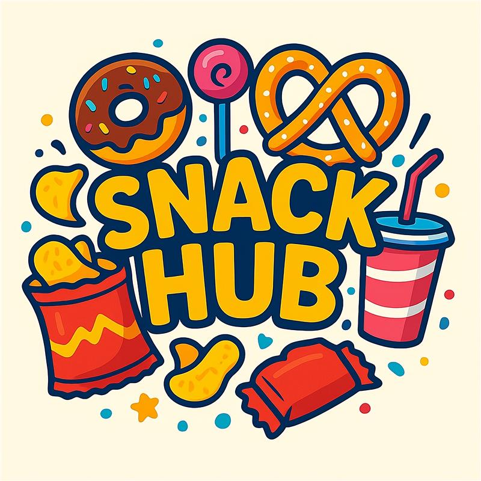

Digitale Kantinenorganisation fuer Schulumgebungen
SnackHub
SnackHub ist eine browserbasierte Webanwendung, die den Bestell-, Voting- und Feedback-Prozess zwischen Schuelern und Kantinenpersonal digital abbildet. Die Anwendung reduziert manuelle Abstimmungen, beschleunigt Rueckmeldungen zum Speiseangebot und schafft eine klare Datenbasis fuer die Tagesplanung. Im Zentrum stehen ein niedrigschwelliger Zugang fuer Schueler, eine saubere Verwaltungsoberfläche fuer die Kantine und ein reproduzierbarer technischer Betrieb auf Python- und MySQL-Basis.
Value Proposition
SnackHub adressiert das Problem, dass Essenswahl, Vorbestellung und Feedback in Schulkantinen oft unstrukturiert, analog und schlecht auswertbar sind. Die Zielgruppe sind Schueler als Endnutzer sowie Kantinen- oder Kioskpersonal als organisatorische Instanz. Die Software löst dieses Problem durch eine gemeinsame Plattform fuer Abstimmungen, Speiseverwaltung, Vorbestellungen und Rueckmeldungen mit rollenbasierten Oberflaechen.
Kurz gesagt: SnackHub macht in wenigen Sekunden klar, was angeboten wird, was gewaehlt wurde und was vorbereitet werden muss.
Projektueberblick¶
SnackHub ist ein Full-Stack-Schulprojekt mit Fokus auf klarer Rollenverteilung und einem nachvollziehbaren Datenfluss. Die Anwendung trennt fachlich zwischen Schueler-Ansicht und Kantinen-Ansicht. Schueler koennen Speisen ansehen, abstimmen, vorbestellen und Feedback geben. Das Kantinenpersonal kann Menues verwalten, Umfragen starten, Vorbestellungen einsehen und Auswertungen nutzen.
Zielgruppen¶
- Schueler: schnelle Interaktion mit Voting, Shop, Vorbestellung und Feedback
- Kantine/Kiosk: operative Planung, Menusteuerung und Rueckmeldungsanalyse
- Projektbetreuer: nachvollziehbare Architektur, reproduzierbare Inbetriebnahme und sauber dokumentierte Entscheidungen
Kernfunktionen¶
- Rollenbasierte Anmeldung fuer
schuelerundkantine - Voting-System mit aktiver Umfrage, Live-Zwischenstand und Stimmenaenderung
- Speisekarten- und Artikelverwaltung fuer die Kantine
- Vorbestellung mit Status fuer Bezahlbestaetigung
- Woechentliches Feedback mit Bewertung und Kommentar
Dokumentations-Navigation¶
Projektstatus¶
SnackHub liegt als lauffähiger Prototyp mit echter Datenbankanbindung vor. Die aktuelle Implementierung ist auf Vorfuehrbarkeit, klare Rollenlogik und technische Nachvollziehbarkeit optimiert. Für eine produktive Weiterentwicklung wären Deployment-Haertung, erweiterte Tests und ein ausgebautes Rechtekonzept die naechsten logischen Schritte.
Screenshot-Integration¶
Die Dokumentation ist bereits so vorbereitet, dass echte UI-Screenshots direkt
integriert werden können. Dafuer ist der Ordner docs/assets/screenshots/
angelegt. Sobald dort echte Bilder abgelegt werden, können sie gezielt in die
Nutzungsanleitung eingebunden werden.